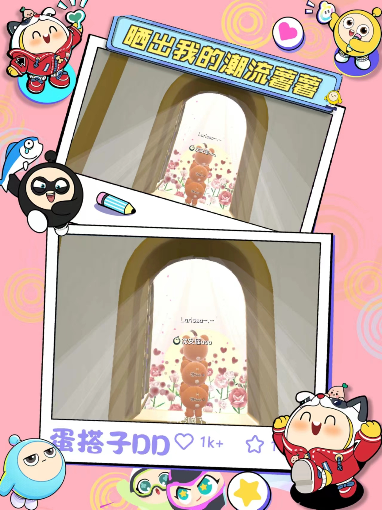

我的爱好
|

蛋仔派对蛋仔派对是一款由网易研发并运营的潮玩休闲竞技游戏。 自2022年5月27日公测以来，该游戏凭借其独特的玩法和丰富的游戏内容，迅速吸引了大量玩家，累计注册用户数量已突破5亿。 2023年7月29日，蛋仔派对在第三届中国游戏创新大赛上荣获“最佳创新游戏大奖”与“最佳创新团队奖”，这进一步证明了其在游戏行业的创新实力和受欢迎程度。 蛋仔派对以其独特的玩法、丰富的游戏内容和创意工坊系统，为玩家提供了一个充满乐趣和挑战的潮玩世界。 无论是喜欢竞技挑战的玩家，还是喜欢创意制作的玩家，都能在蛋仔派对中找到自己的乐趣。 |
|---|
美食特色财大小吃街，位于武汉市洪山区南湖南路1号中南财经政法大学南湖校区附近，是一条历史悠久且充满美食特色的小吃街 它是武汉地区著名的美食聚集地，以其丰富多样的美食和独特的口味吸引了众多食客。 这里有蛋肉堡、罐罐烤奶、芋泥梅花糕、白莲藕粉等等各种美食。 无论是传统小吃还是现代创意美食，都能在这里找到。每个美食都有其独特的特点和口感，值得一试。 无论是学生还是游客，都能在这里找到满足自己口味的美食。 |

读书中南财经政法大学图书馆是我心中的读书圣地。这么久以来，我最喜欢的数还是《红楼梦》。 《红楼梦》是一部博大精深的文学巨著，阅读它如同走进一个瑰丽而复杂的世界。 我深感其中人物的悲欢离合、家族的兴衰荣辱，都映射出人性的光辉与阴暗。 这部作品让我对人生有了更深刻的思考，对传统文化有了更浓厚的敬意。 它教会我珍惜眼前人，把握当下，同时也让我反思人性的复杂性和社会的复杂性。 通过阅读《红楼梦》，我更加明白了人生的真谛在于不断追求内心的平和与宁静，以及对于真、善、美的永恒追求。 |